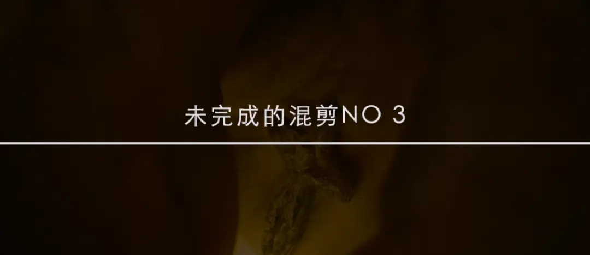
这又是一期未完成的混剪系列
为了增加趣味性
我会放混剪电影的剧照
但不会标注电影名字
大家也可以测试一下自己的阅片量
这一次涉及20部电影
（晚上十点我会揭晓答案）
也欢迎喜欢剪辑的朋友留言
我们可以一起完成这些混剪
这次混剪的主题是“复活”和“重生”
这对于很多人来说非常陌生
但却是西方文明最重要的力量和钥匙
正是因为耶稣的复活
牛顿坚信这个世界被造奇妙可畏
所以怀着敬畏的心投身在科学研究中
米开朗基罗才能在大理石中看到被禁锢的力量
用心灵和诚实将伟大的艺术雕琢出来
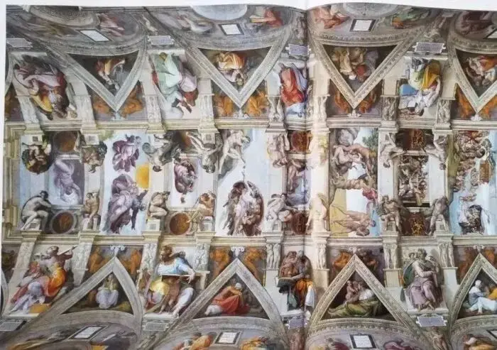
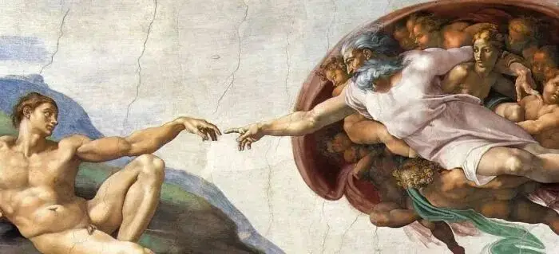
丘吉尔才能在英国的至暗时刻
不向希特勒和纳粹低头
这份力量也曾笼罩在中华大地
通过燕京大学、西南联大、圣约翰大学
协和医院、仁济医院等学校和机构
向中国人传递这份重生的力量
这次混剪的主题曲
我选择的是Joshua Garrels的作品
他的作品非常独特
不艰深、不理论
而是在真实的生活中遇到了信仰
在自己的生命中发现了救赎的需要和方向
建议大家可以跟着歌词
一起聆听这些优秀的作品
-01- a long way
这次混剪的思路分为两个部分
第一个部分用他的作品《A Long Way》来呈现
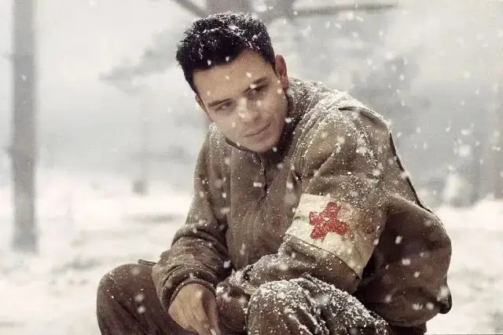
这部分呈现的是我们的生命状态
我们将奔赴属于自己的生命
这是一场冒险
是一场堕落
我们会犯错、会骄傲
还会不知所措
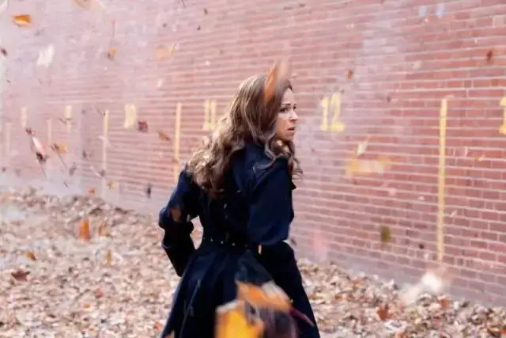
受伤时 我们想到了“父亲”的教诲
多么渴望重回天家
重新汲取力量
然后向着生命再次出发！
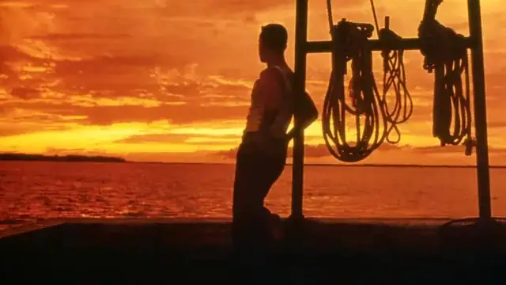
（歌词开始...）
There's a time in our lives,
生命中总有一段时光，
To return sacrifice,
用来回报奉献，
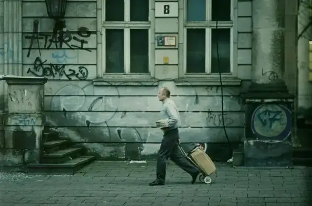
Wild grass has grown high,
人生道路的两旁，
On the path between our lives,
早已绿草繁茵，
There's a light in the trees,
树梢透过的阳光正在慢慢靠近，
It's closer now I'm on my knees,
我跪倒在地，
Oh Father forgive me please,
父亲 请宽恕我，
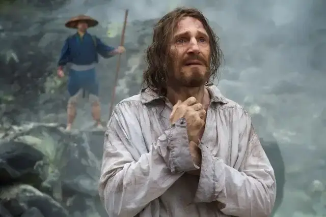
I came a long long way back home,
我踏上漫漫归途，
To see you one more time,
只为再见您一面，
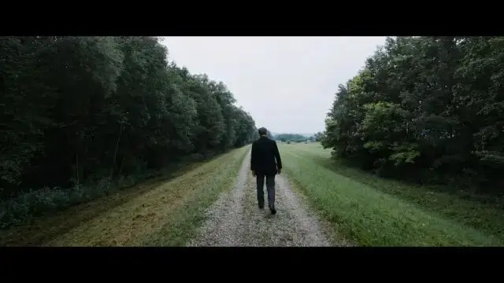
'Cause I came a long long way back home,
我踏上漫漫归途，
To see you and say Goodbye oh,
只为向您告别，
Father's hands work the ground,
父亲没有停下在地里劳作的双手，
Turns the soil lays it down,
铲土、翻土、步步耕耘，
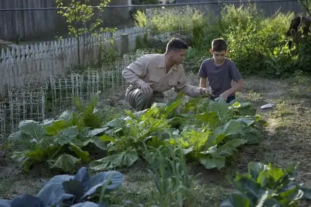
Everything done and said,
忙完手头的活 他对我说，
Lives beyond the quick and the dead,
生命的意义与生存或是死亡无关，
Heritage passed along,
而在于将物质和精神传承给，
To the sons like a blessed song,
被主庇佑的子孙后代，
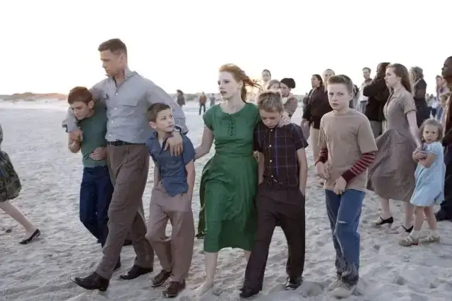
So raise your voices on high tonight,
今夜放声高歌，
We came a long long way back home,
我们踏上漫漫归途，
To see you one more time,
只为再见您一面，
We came a long long way back home,
我们踏上漫漫归途，
To see you and say Goodbye,
只为向您告别，
We came a long long way back home,
我们踏上漫漫归途，
To see you one more time,
只为再见您一面，
We came a long long way back home,
我们踏上漫漫归途，
To hold you and say Goodbye,
只为拥抱你 并向你作别，
Ohh Goodbye,
Ohh 再见。
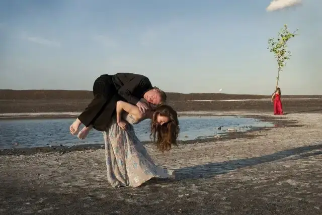
-02- born again
有了第一部分的铺垫
我们来到第二部分的复活和重生
也许你会觉得这是神神叨叨的词语
但奇迹总是那样的润物无声
当我们意识到被爱的时候
当我们遥望星空的时候
当我们心里隐隐作痛的时候
也许，那个时候
你在经历重生
（歌词开始...）
Came into the world, to the wild,
来到人世 回归荒野，
No place for a child,
幼童无处容身，
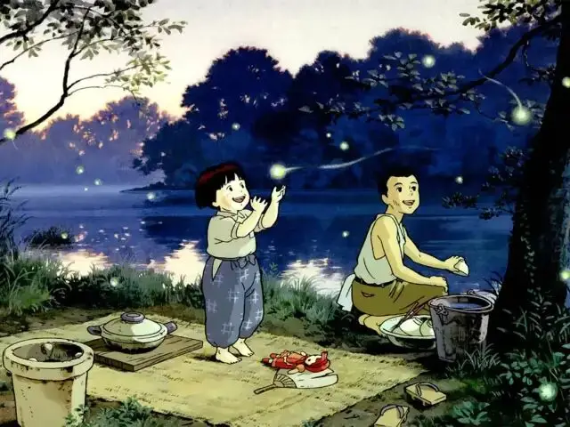
Used my voice to howl,
用我的声音怒吼着，
With the ghouls of night,
就在食尸鬼出没的夜，
In the dying light,
掩映在昏暗的微光中，
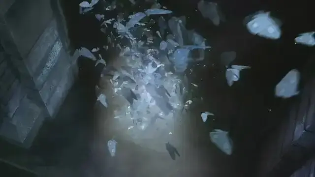
I had to learn to get what I need,
我得学会生存的技能，
In the dark, empty,
在黑暗中 空无一人，
Instincts are guiding me,
直觉指引着我，
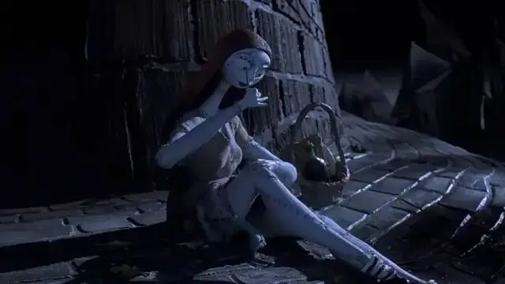
Like a beast to some blood,
就如野兽被鲜血吸引，
And I can't get enough,
但我学不会满足，
I'm losing control,
最终失去控制，
My body, my soul are slowly fading away,
我的躯体，灵魂，缓缓隐去，
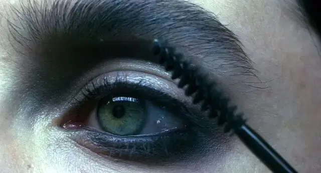
But I'm ready now to feel the power of change,
但我已经准备好去改变，
I'm my mother's child,
我是母亲的孩子，
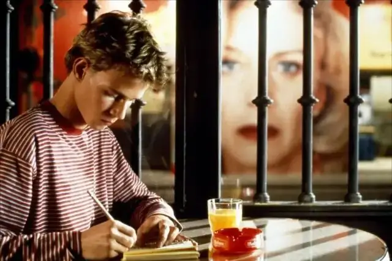
I'm my father's son,
我是我父亲的儿子，
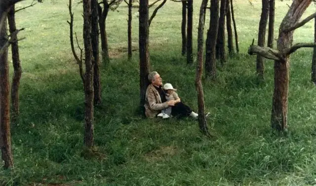
It took me a while,
虽然长路漫漫，
But my time has come,
但我的时代降临了，
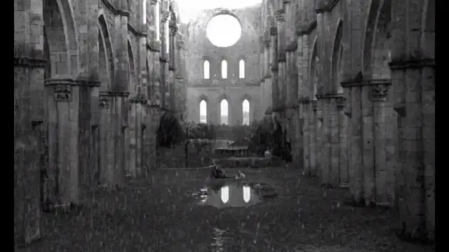
To be born again,
又重生了一次。
To be born again,
又重生了一次。
Running scared in between,
慌忙中奔跑着 游离在，
What I hate and what I need,
那些我痛恨的和我需要的事物之间，
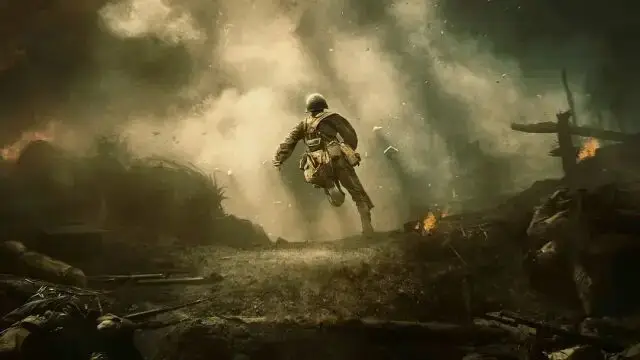
Savior and enemy are both trying to take my soul,
救世主和敌人都要拿走我的魂魄，
And I can't hide no more,
我再也无法躲躲藏藏，
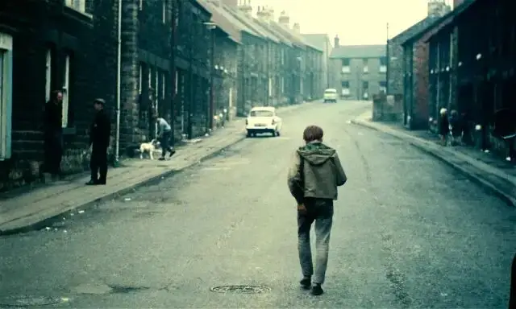
Stumble out into the light,
跌跌撞撞地奔向那片光明，
Raise my fists up to fight,
举起我的拳头去作战，
Then I catch your eyes,
我成了你的视线焦点，
So full of love,
眼里满含着爱意，
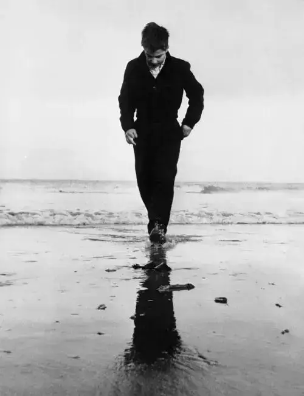
Lord, what have I done?
上帝啊，我做了什么？
I cry at your feet,
我在你的脚下哭泣，
Wounded for me,
因我而伤，
And all of the monsters of men,
所有的生灵，
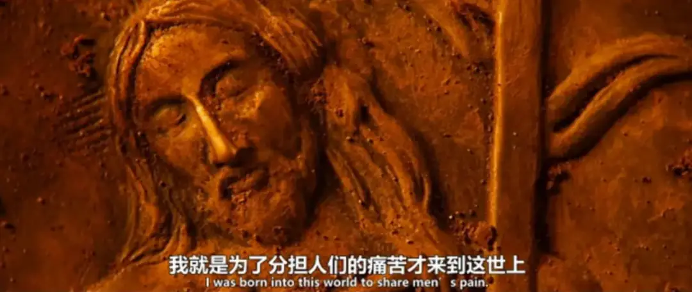
But here in your light, we can begin again,
沐浴在您的圣光下，我们都可以洗净骨头重新做人，
I'm my mother's child,
我是母亲的孩子
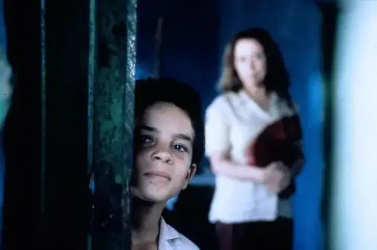
I'm my father's son,
我是我父亲的儿子，
It took me a while,
虽然长路漫漫，
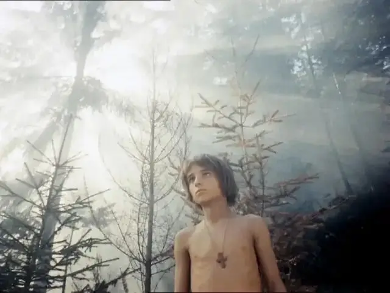
But my time has come,
但我的时代降临了，
I'm my mother's child,
我是母亲的孩子，
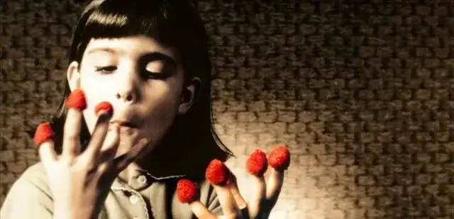
I'm my father's son,
我是我父亲的儿子，
Lord, took me a while,
我主，虽然长路漫漫，
But my time has come,
但我的时代降临了，
To be born again,
又重生了一次。
To be born again,
又重生了一次。
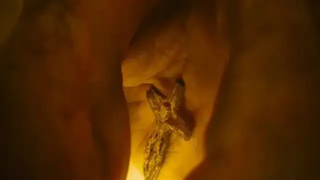
相似推荐
▼
未完成的混剪no 1
未完成的混剪no 2
-END-
这里没有挑逗你眼目情欲的小鲜肉
也没有挑动你肉体情欲的段子
更没有膨胀你今生骄傲的鸡血
我们只在乎那些最质朴真诚的作品
在那里我们才能恢复真正的想象力
我们也坚信这才是我们真正需要的

ID:Six_hundred_hits
长按二维码，一键关注
【六百击】
电影评论
尽情分享朋友圈

微信二维码打赏通道